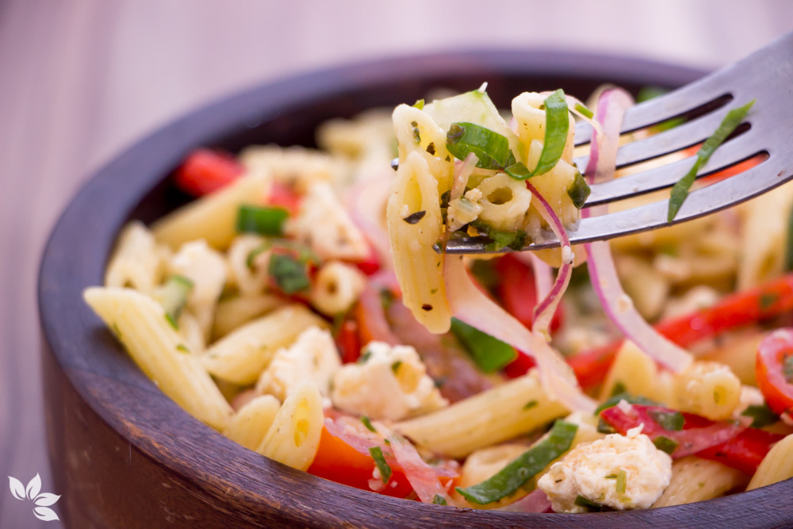

Receita de salada de macarrão
Ingredientes
- 1 pacote de macarrão tipo parafuso cozido
- 1 cenoura ralada
- 200 g de mussarela picada em cubos
- 1 caixinha de milho e ervilha
- manjericão picadinho a gosto
- pimenta-do-reino a gosto
- 1 caixa de creme de leite
- 1 caixa de creme de leite
- 200 g de peito de peru defumado picado em cubos
- 1 tomate picado em cubos
- salsinha picadinha a gosto
- sal a gosto
- suco de 1/2 limão
- 5 colheres de maionese
Modo de preparo
- 1º - Junte tudo em uma tigela grande, misture bem.
- 2º - Deixe gelar por 30 minutos.

Receita de salada de fruta
Ingredientes
- 2 mamões papaia pequenos
- 5 bananas
- 5 morangos maduros
- 10 grãos de uva (qualquer variedade)
- 10 cubos de gelo
- 1 laranja média
- 2 maçãs
- 1 pêssego
- 1 caixa leite condensado (opcional)
- 1/2 colher (sopa) canela em pó
Modo de preparo
- 1º - Pique todos os ingredientes, a laranja em pedaços menores que as outras frutas, depois ela solta o caldo e a salada não fica tão ácida.
- 2º - Coloque tudo em um prato fundo e adicione o leite condensado (se quiser), a canela em pó e o gelo, mexa por alguns segundos e leve a geladeira por 30 minutos.
- 3º - Fica uma delícia.
Receita de salada de berinjela
Ingredientes
- 2 berinjelas grande cortadas em cubinhos
- 1 cebola cortada em rodelas
- 1 colher de sopa de orégano
- 2 colheres de sopa de azeite
- 1/2 limão
- 1 dente alho fatiado fino
- 4 tomates pequenos em rodelas
- 2 pimentões médios cortados em cubos
- 1 colher de sopa de shoyo ou molho inglês
- Sal e pimenta do reino a gosto
Modo de preparo
- 1º - Corte as berinjelas em cubinhos e deixe de molho na água com sal por no mínimo 30 minutos para tirar o sabor amargo.
- 2º - Após isso cozinhe as berinjelas até estarem bem macias.
- 3º - Doure no azeite, o alho, a cebola e os pimentões, desligue o fogo e acrescente os tomates, misturando muito bem.
- 4º - Jogue esses ingredientes já prontos na berinjela cozida e escorrida e misture tudo.
- 5º - Esprema o limão, coloque o sal, a pimenta do reino, o orégano e o shoyo.
- 6º - Leve à geladeira por no mínimo 4 horas e sirva com pães ou mesmo durante as refeições.